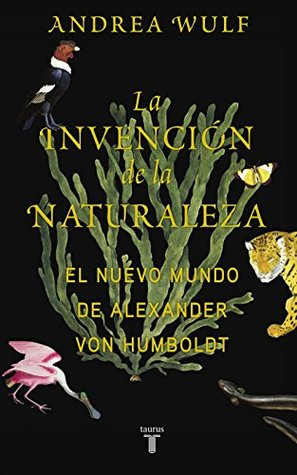

La invención de la naturaleza: El Nuevo Mundo de Alexander von Humboldt
Reseña por Jorge I. Zuluaga

Ver reseña en GoodReads (necesita cuenta)
Este maravilloso "trastorno" (que no tiene nombre todavía, son muy pocas las personas que lo han experimentado hasta ahora) parece ser exactamente lo que llevo a Alexander Humboldt a concebir su visión única de la naturaleza.
Un día de 1802, a unos centenares de metros de la cima del Chimborazo y a una altura mayor a la que había estado cualquier persona antes en la historia, Humboldt tuvo la fantástica "epifanía" de que todo en el planeta, la vida, la atmósfera, incluso su geología estaba íntimamente conectado.
Mi "relación" con Humboldt comenzó a el año 1995 cuando se realizó en Medellín un evento para celebrar los 150 años de la publicación del primer volumen de su obra cumbre, "Kosmos." Ese año no solo conocí a Humboldt, sino también a quién se convertiría después en mi esposa. De aquel histórico evento en Medellín, recuerdo especialmente las apasionantes conferencias de Gabriel Jaime Gómez, el entonces director del Planetario, quién sembró en nosotros y en general en Medellín, el amor por el Naturalista prusiano.
Debo confesar, sin embargo, y no sin un poco de vergüenza, que a pesar de la admiración que despertó en nosotros Gabriel Jaime por Humboldt, no había leído nada sobre este ídolo intelectual de dos siglos y medio, en estos 24 años.
Después de todo esto no espero que crean que soy muy objetivo al juzgar el fantástico libro de Andrea Wulf, que me permitió, tal vez tardíamente, redescubrir a este ídolo intelectual.
El libro es muy agradable, fácil de leer y bastante entretenido (al menos para quienes gozamos con el género biográfico e histórico.) Esta lleno de anécdotas curiosas, historias entretenidas y amenas sobre su vida cotidiana, la relación con sus amigos, otros científicos y con las autoridades de la época.
El texto esta bien ilustrado, reproduciendo copias de grabados y pinturas en un número que no es muy común en este tipo de biografías. Más allá de lo cotidiano y lo anecdótico, el libro contiene también abundantes y profundas reflexiones de la propia autora sobre la obra del naturalista y la de aquellos aquellos a los que influenció.
En una palabra: ¡tremendo trabajo! (de las 567 páginas, 150 son de notas y bibliografía)
Al terminar el libro tienes la sensación de haber conocido a Humboldt: el naturalista parlanchín, el barón memorioso, el sabio de lengua viperina; Humboldt el homosexual (¿o tal vez el asexual?), el rebelde, el viajero, el adicto al café (al que llamaba "Sol concentrado"); Humboldt el naturalista curioso, el polimata entre los polimatas (algunos decían que una hora Humboldt te podría enseñar lo que aprenderías en 8 días leyendo libros.)
Conocer a Humboldt a través del libro de Wulf me permitió entender algo sobre las personas realmente inteligentes: no importa el tiempo en el que vivan, parecen entender profundamente los problemas esenciales de la vida y del mundo.
En una época en la que incluso los políticos más liberales coqueteaban con la esclavitud, Humboldt entendió la brutalidad de esta práctica. En una época en la que la explotación de la naturaleza se veía como una muestra de poder y progreso, Humboldt entendió que los efectos a largo plazo de ese progreso desmedido serían potencialmente catastróficos. Cuando incluso hombres de ciencia sostenían algún credo, Humboldt era ateo o al menos agnóstico. En un tiempo en el que la ciencia empezaba a especializarse, en el que empezaban a levantaban las "barreras" que después separarían a la física de la química de la biología de la geología, Humboldt creía en una virtuosa interrelación entre todas ellas como único camino para comprender el Universo. En un tiempo en el que los científicos escribían libros eruditos de ciencias cada vez más vastas, Humboldt se atrevió a escribir su obra cumbre en código divulgativo (los primeros dos volumenes de Kosmos fueron "best sellers" en su época e inspiraron a decenas de futuros científicos como lo haría el contemporáneo Cosmos de Carl Sagan.) Humboldt se adelanto a la evolución. Humboldt se adelanto a la deriva continental. Humbold se adelanto a la ecología (en realidad es el padre de esta disciplina) y a los modernos movimientos de conservación. Humboldt se adelanto al calentamiento global. Humboldt se adelanto a las grandes colaboraciones científicas internacionales (ideo e impulso la cruzada magnética, para hacer observaciones del campo magnético en tantos puntos de la superficie de la Tierra como fuera posible.)
En fin. Ahora entiendo al emperador prusiano Federico Guillermo IV cuando un dijo de Humbold que era "el hombre más importante desde el diluvio." No hubo diluvio pero si tuvimos a Humboldt.
Lean a Wulf, redescubran a Humboldt.